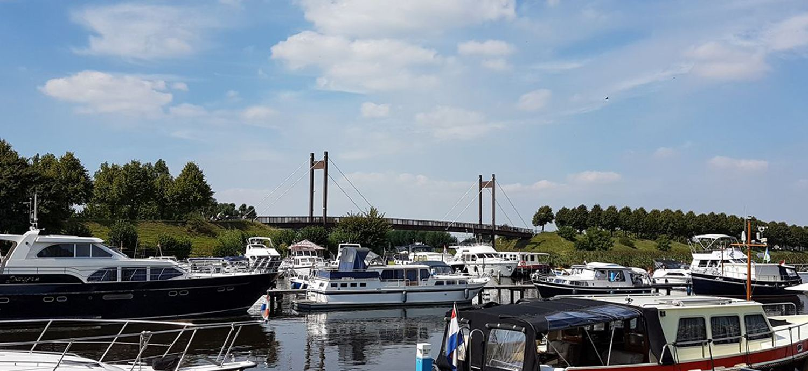
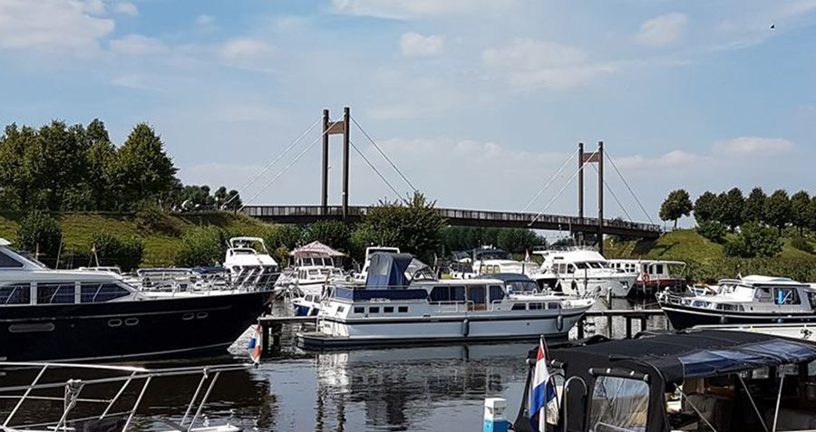
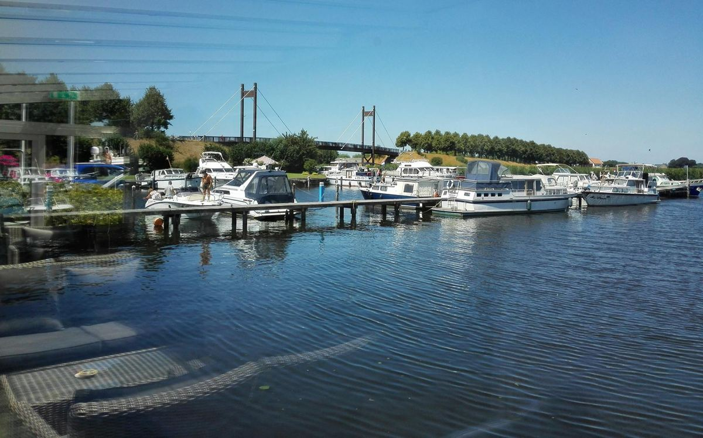
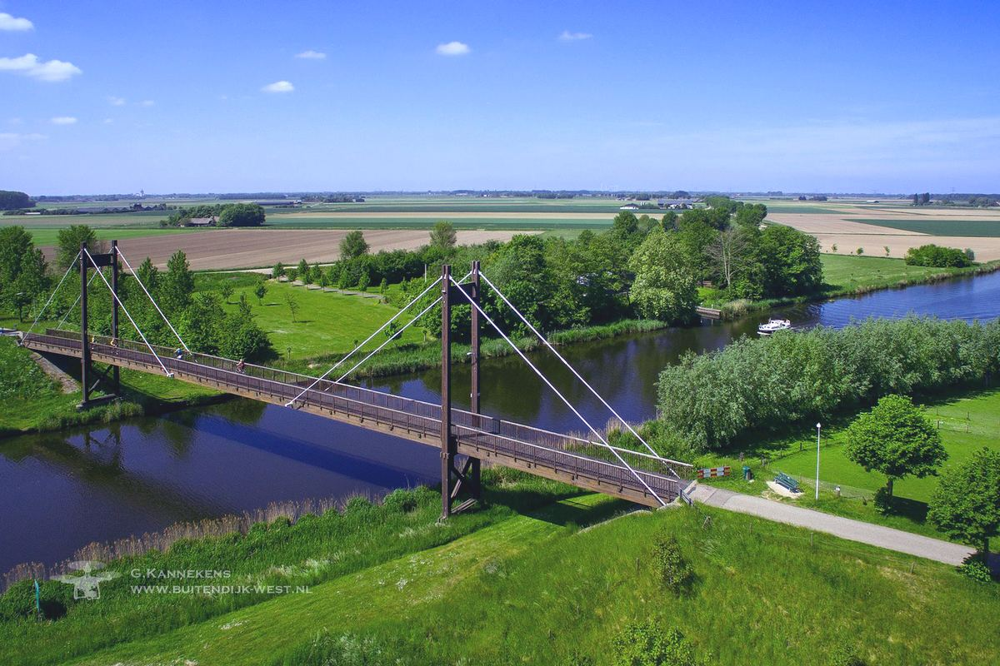
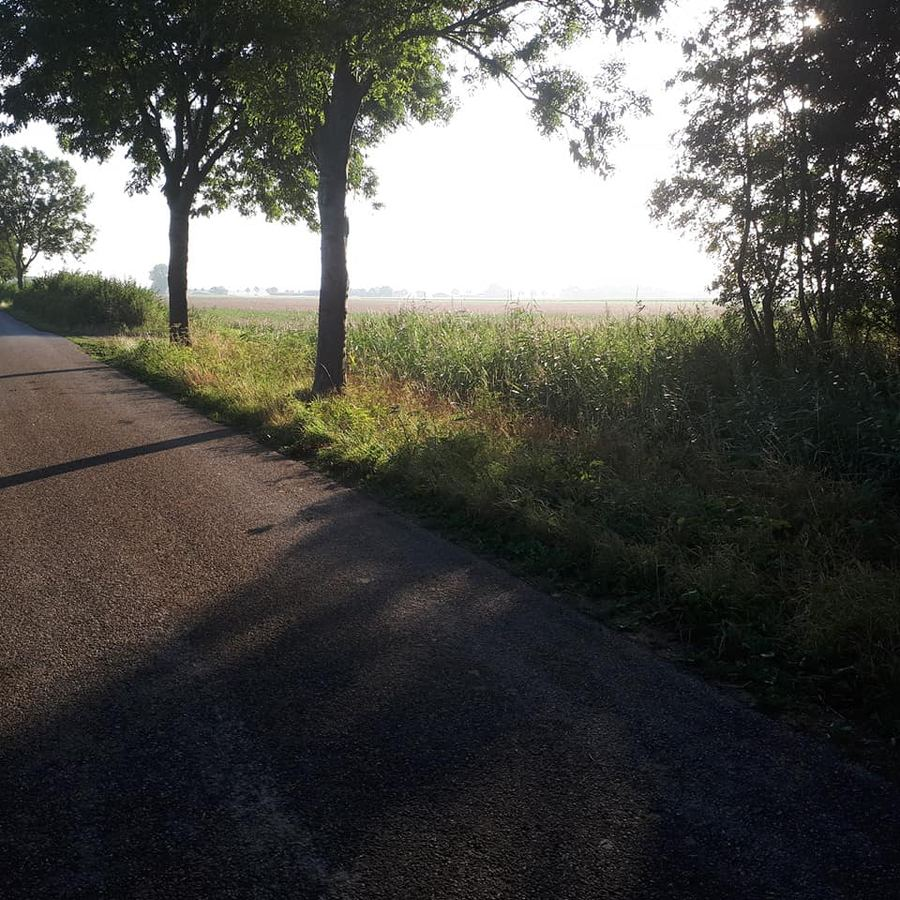
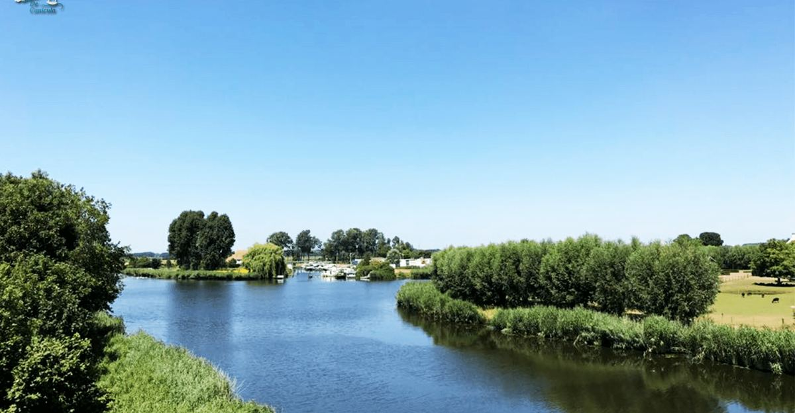

Een haven van rust aan de Mark
Jachthaven en watersportcentrum tussen Zevenbergen en Hoeven. Passanten welkom van 1 april tot en met 30 september: bel of app gerust voor een overnachting van april t/m september.
Over de jachthaven
't Lamgat ligt aan de rivier de Mark, tussen Oudenbosch en Breda en op drie kilometer van Zevenbergen. Een centrale plek met aansluiting op het rivierenland van Mark en Dintel, waterroutes voor kanoërs, vislocaties en vooral veel rust en natuur.
In het pand bij het kantoor van de havenmeester vind je toilet- en wasgelegenheid en een ontspanningsruimte.

Tarieven
Eenvoudig en duidelijk: je betaalt per meter boot en per nacht.
Passanten
Op zoek naar een vaste ligplaats? Vraag gerust naar de mogelijkheden en het maandtarief.
Een nacht blijven liggen?
Bel of app de havenmeester voor een overnachting. Tijdens het vaarseizoen van 1 april tot en met 30 september.
Uitvalsbasis voor Mark en Dintel
Het rivierenland van Mark en Dintel is zo'n 36 kilometer groot. Vanaf 't Lamgat ontdek je het over het water én aan wal. Folders van de omgeving liggen voor je klaar.
Varen
Via het water naar Oudenbosch, Roosendaal en Breda.
Kanoën
Waterroutes speciaal voor kanoërs, vlak bij de haven.
Vissen
Diverse mooie vislocaties langs de Mark.
Fietsen
De haven ligt aan fietsknooppunt 35.
Wandelen
Knooppunt 51 van het wandelroutenetwerk Brabant.



Ook aan wal goed geregeld
"Dankzij onze voorzieningen en onze ligging is 't Lamgat een haven van comfort, privacy en rust."
't Lamgat ligt op een rustige plek aan de Mark. Op het gazon kun je barbecueën en voor de kinderen staan er speeltoestellen.
- Gazon met barbecue
- Speeltoestellen
- Toilet en wasgelegenheid
- Ontspanningsruimte
Ligplaats aanvragen
Laat weten wanneer je wilt komen en hoe lang je boot is. De havenmeester laat je zo snel mogelijk weten of er plek is.
Liever even bellen?
Passanten kunnen tijdens het vaarseizoen bellen voor een overnachting.